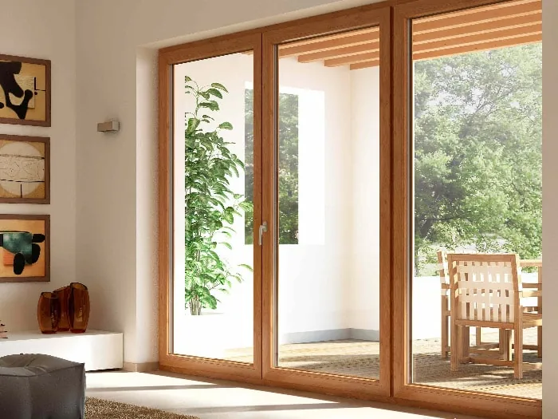
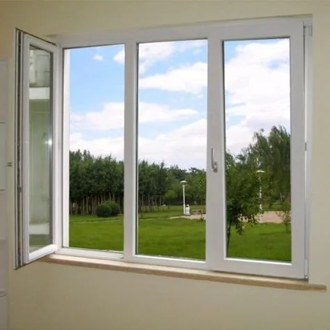
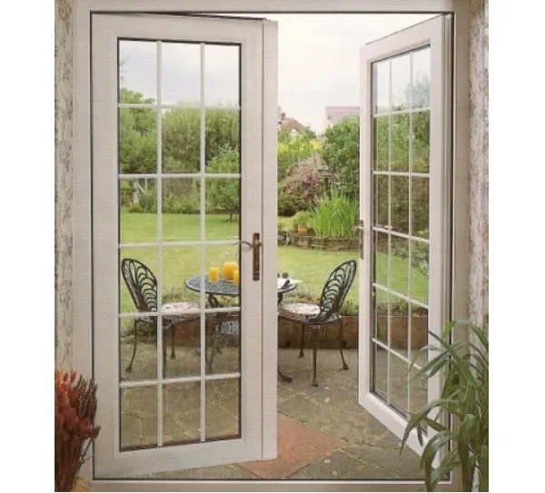
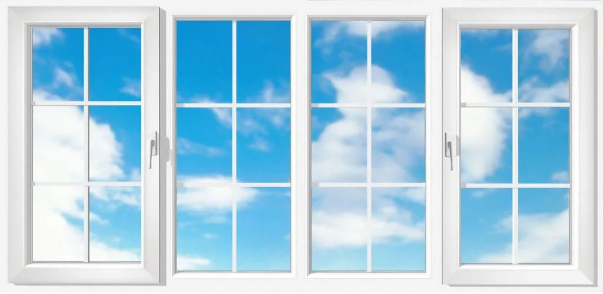
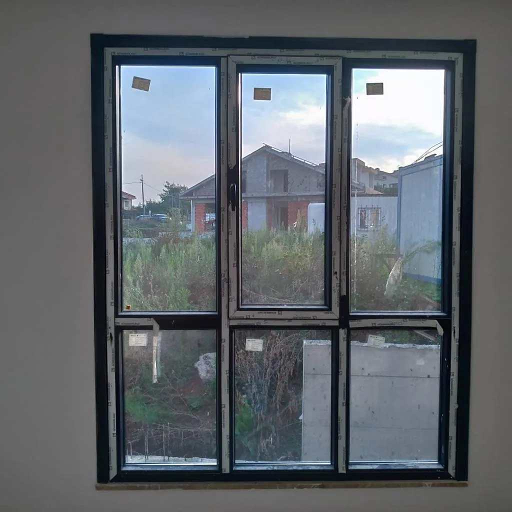

PVC pencere
Binaların dış cepheye bakan tüm yüzeylerinde — ısı ve ses yalıtımıyla birlikte.
İstenilen ölçüde PVC kapı, pencere, oda ve balkon kapama uyguluyoruz — mimariye uyumlu, dört mevsim performans.
Doğrama
PVC pencere sistemlerini binaların dış cepheye bakan yüzeylerinde kullanıyoruz. PVC kapıları ise balkonlarda olduğu gibi evin dışına açılan bölümlerde; ayrıca banyo ve WC gibi su ve neme maruz kalan iç mekanlarda da tercih ediyoruz.
Ölçüyü yerinde alıyor, profil ve donanımı projenize göre seçiyoruz. Amacımız sadece bir doğrama satmak değil; yıllarca sorunsuz açılıp kapanan, yalıtımı tutan bir sistem kurmak.
Uygulama
Ahşap desenli balkon geçişinden antrasit pencereye — projenize uygun görünümü birlikte seçiyoruz.





Kullanım
Binaların dış cepheye bakan tüm yüzeylerinde — ısı ve ses yalıtımıyla birlikte.
Balkonlar ve evin dışına açılan geçişler — ahşap desenli veya düz renk seçenekleriyle.
Su ve neme maruz kalan banyo, WC gibi ıslak hacimler — yıkanabilir, uzun ömürlü yüzey.
Islak hacim
Banyo ve WC’de uzun ömür, su ve nemden etkilenmeme, yıkanabilme — bu yüzden PVC kapı sistemlerini en doğru uygulamalardan biri olarak görüyoruz.
Oda kapı kilidi, WC kilidi, kilitli ispanyolet ve benzeri her türlü kol ve kilit mekanizmasını PVC kapılarda sorunsuz kullanabiliyoruz. Lambri veya ahşap desenli kaplamalı PVC panel seçenekleri hem uygulanabilirliği artırıyor hem de alternatiflerine göre maliyet avantajı sunuyor.
Teknik
Belirli bir büyüklüğün üzerindeki PVC pencerelerde rüzgar yüküne dayanım ile hava ve su sızdırmazlığı için standart pencere kanadı yerine kapı kanadı profili kullanmak zorundayız.
Mimari açıdan bakıldığında bu durum görsel olarak fark edilebilir olsa da, büyük ebatlarda teknik bir zorunluluk — dayanıklılık ve yalıtım performansı estetik tercihin önüne geçer. Keşifte ölçüye göre doğru profili birlikte netleştiriyoruz.
Donanım
İspanyolet: Pencere kanatlarını kapattıktan sonra sürgülemeye yarayan, ortasında her iki yöne işlemeyi sağlayan bir tutacak bulunan uzun demir sürgü sistemidir.
PVC pencere ve kapı, birçok bileşenin bir araya gelmesinden oluşan bütünsel bir sistemdir; ispanyolet bu bütünün en kritik parçalarından biridir. Doğru seçim kadar kalite de önemli — ispanyoletin PVC profil sistemiyle uyumlu olması, pencerenin yıllar boyunca sorunsuz çalışmasını doğrudan etkiler.
Avantaj
| Avantaj | Açıklama |
|---|---|
| Isı yalıtımı | Isı kayıplarını engelleyerek yakıttan tasarruf sağlar |
| Yangın güvenliği | İçeriğindeki klor nedeniyle alev alma sıcaklığı yüksektir; tutuşsa bile kendiliğinden söner |
| Hafiflik | Metal, alüminyum ve ahşapla karşılaştırıldığında çok daha hafiftir |
| Ses yalıtımı | Gürültü kirliliğini yüksek ölçüde azaltır |
| Bakım kolaylığı | Kullanımı, bakımı ve temizliği alternatiflerine göre ekonomik ve kolaydır |
| Geri dönüştürülebilirlik | PVC atıklar kolayca geri dönüştürülerek ekonomiye kazandırılır |
| Ekonomiklik | Alternatiflerine göre uygun maliyetli bir çözümdür |
| Orman koruma | PVC kullanımı ahşap tüketimini azaltarak ağaç kesimini düşürmeye katkı sağlar |
Teklif
Firmamız ve sunduğumuz hizmetler hakkında bilgi almak, ücretsiz keşif talep etmek veya fiyat teklifi almak için bizi arayabilirsiniz. Fiyat; ölçü, sistem, cam tipi ve donanıma göre oluşur — keşif sonrası net teklif veriyoruz.
SSS
PVC pencere sistemlerini binaların dış cepheye bakan yüzeylerinde kullanıyoruz. PVC kapıları balkonlarda, evin dışına açılan bölümlerde ve banyo/WC gibi su ve neme maruz kalan iç mekanlarda tercih ediyoruz.
Evet. PVC kapı sistemleri nem ve suya karşı yüksek dirençleri, yıkanabilir yüzeyleri ve uzun kullanım ömürleri nedeniyle banyo ve WC kapılarında en doğru uygulamalardan biridir.
İspanyolet, pencere kanatlarını kapattıktan sonra sürgülemeye yarayan, ortasındaki tutacak ile her iki yöne kilitleme sağlayan uzun demir sürgü sistemidir. Pencerenin yalıtım ve güvenlik performansında kritik rol oynar.
Belirli bir ebadın üzerindeki PVC pencerelerde rüzgar yüküne dayanım, hava ve su sızdırmazlığını sağlamak için standart pencere profili yerine daha güçlü kapı kanadı profili kullanılması teknik bir zorunluluktur.
Evet. Osmaniye ve çevresinde PVC kapı, pencere, oda ve balkon kapama talepleriniz için ücretsiz keşif sunuyoruz. Detaylı bilgi ve fiyat teklifi için bizi arayabilirsiniz.
Keşif
Osmaniye ve çevre — ücretsiz keşif, her gün 09:00–17:00.